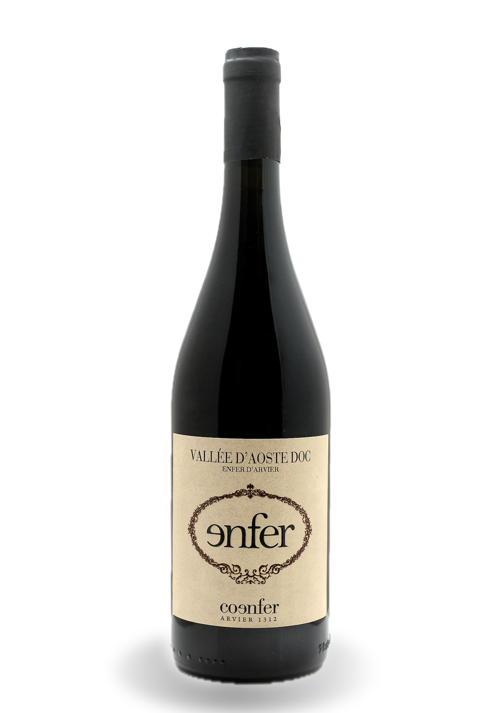
[01]
Enfer
Il classico. Rubino intenso, frutta matura sotto spirito, 12 mesi in tonneaux di rovere.
23 €
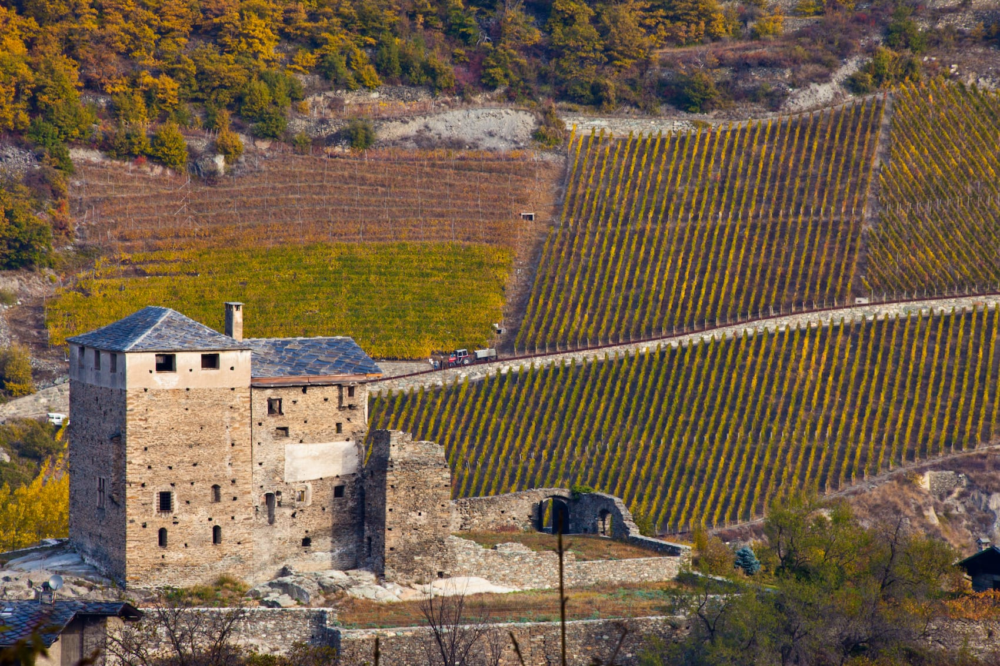
Immergetevi nel cuore dell'anfiteatro più caldo delle Alpi.
Cento soci, sette ettari a picco sulla Dora, pendenze oltre il 100%. Ad Arvier il sole picchia così forte che questo posto lo chiamano Enfer — inferno. Noi ci facciamo il vino. Biologico, ovviamente: la più estesa realtà bio di tutta la Valle d'Aosta.
La cantina
Quattro rossi e una bollicina di montagna. Trentacinque–quarantamila bottiglie l'anno, non una di più: l'inferno è un posto esclusivo.

[01]
Il classico. Rubino intenso, frutta matura sotto spirito, 12 mesi in tonneaux di rovere.
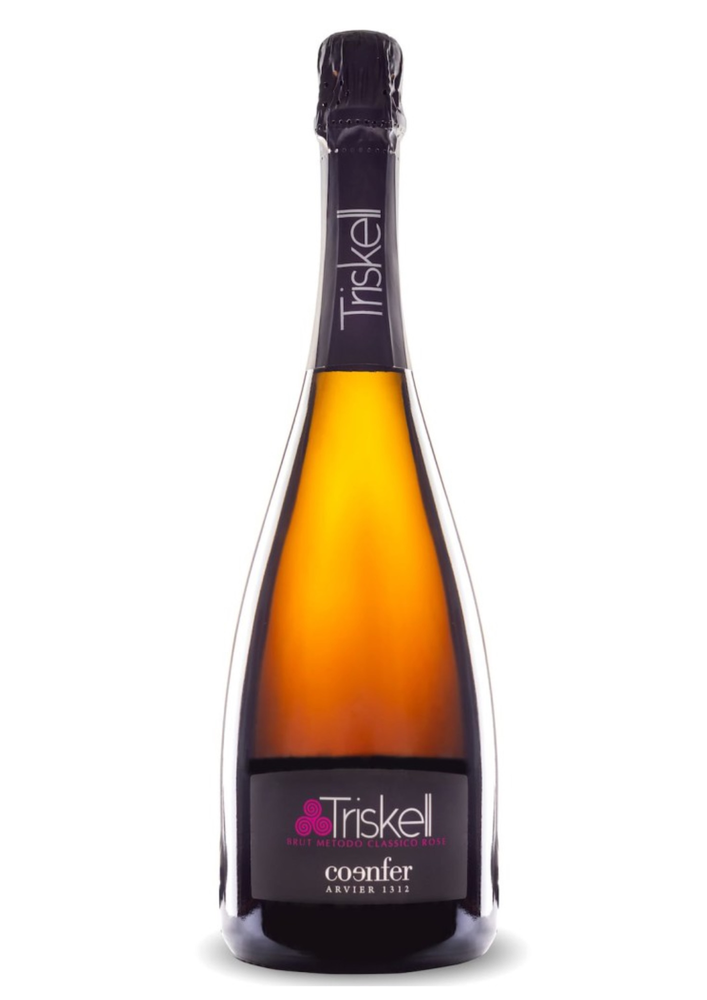
[02]
36 mesi sui lieviti, remuage a mano su pupitres. Le bollicine nate all'inferno.
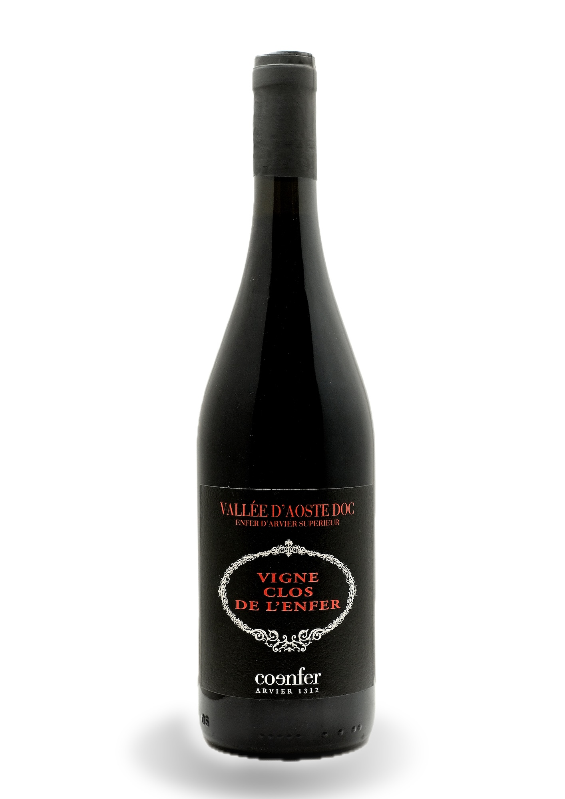
[03]
Un terzo delle uve appassisce 30 giorni. Marmellata di ciliegie, cuoio, cioccolato fondente.
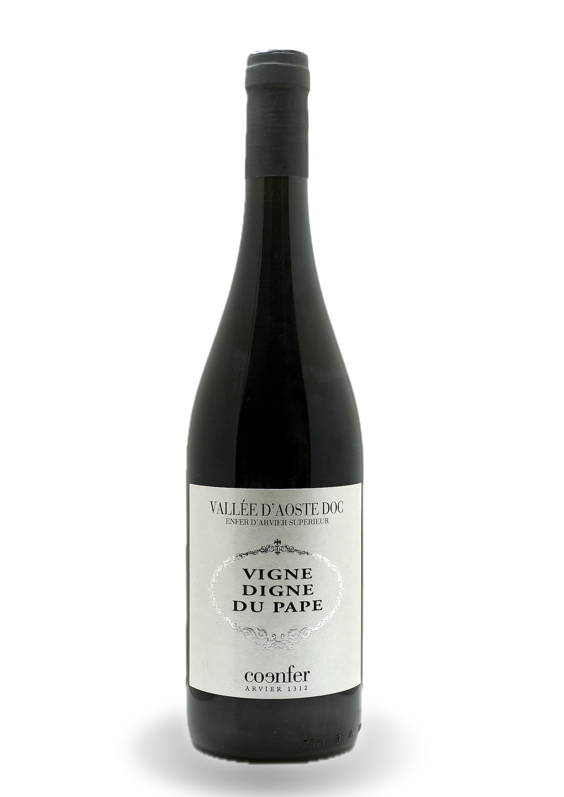
[04]
Il gioiello. Vigneto a 750 metri, lieviti indigeni, 24 mesi di tonneaux. Degno di un papa.
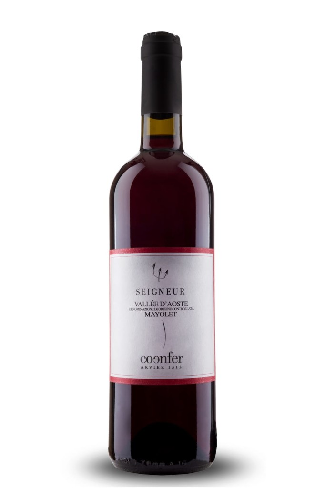
[05]
Coltivato ai piedi di due manieri medievali. Tiratura minuscola, va chiesto in cantina.
La leggenda
— la domestica del parroco, ad Arvier, qualche secolo fa
Due viandanti chiedono del parroco. La risposta è un rebus: «soffre all'inferno», oppure «è all'Enfer, a dare lo zolfo». Con tutta probabilità era lì, a lavorare le vigne dell'anfiteatro: piena esposizione a sud, microclima rovente, 800 metri di quota. Un inferno, appunto. Dal 1312 — quando Rodolphus de Avisio già possedeva vigneti in zona — qui non si è mai smesso di fare vino.
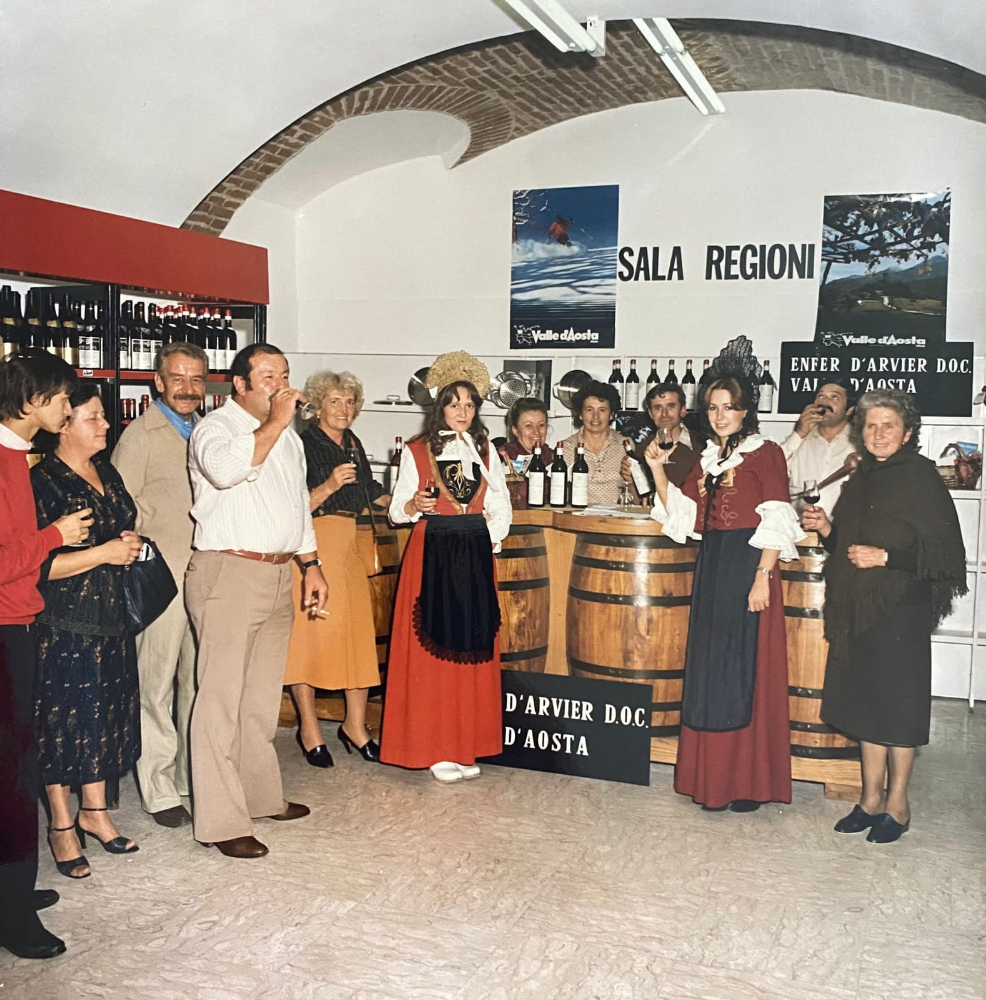
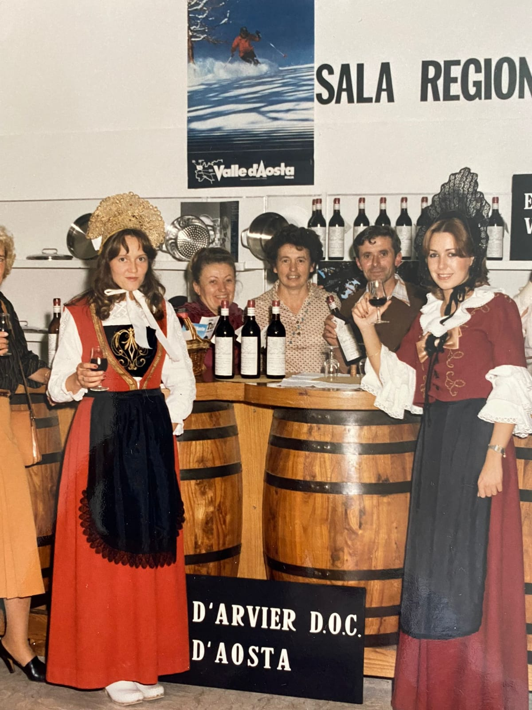
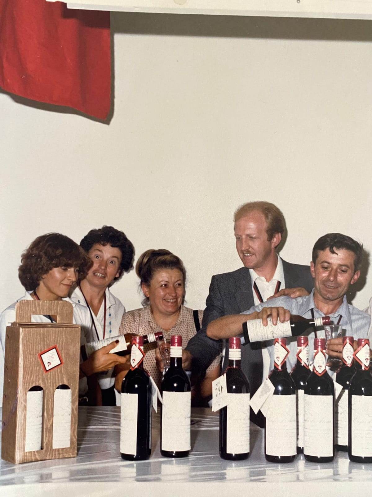
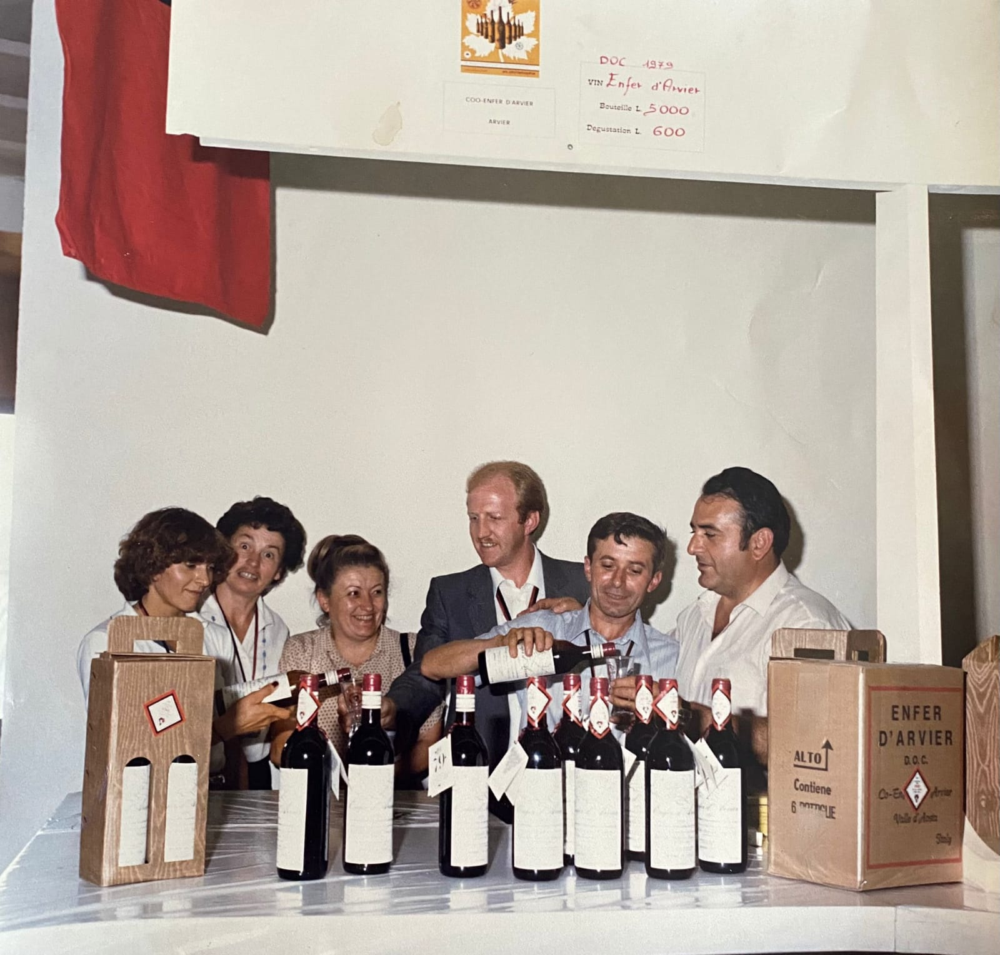
1312
Rodolphus de Avisio possiede vigneti nell'attuale zona dell'Enfer. A Liverogne si produce vino pregiato da almeno 700 anni.
1494
Giorgio di Challant accoglie Carlo VIII di Francia con abbondanti libagioni di Enfer. Il re approva.
1972
Il 2 giugno l'Enfer d'Arvier è tra i primi vini valdostani a ottenere la Denominazione di Origine Controllata.
1978
Un centinaio di soci di Arvier e Avise mettono insieme le vigne: la cooperativa gestisce tutto, dal grappolo alla bottiglia.
2012
Sara Patat, presidente, converte tutta la superficie vitata al biologico certificato. Oggi è la realtà bio più estesa della regione.
Oggi
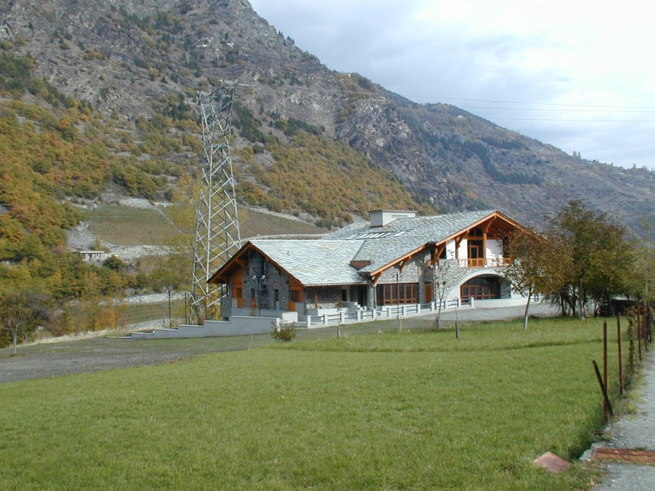
50+ anni di DOC, marchio di qualità del Parco Gran Paradiso, una medaglia d'oro al Mondial des Vins Extrêmes 2025.
2027
La cooperativa
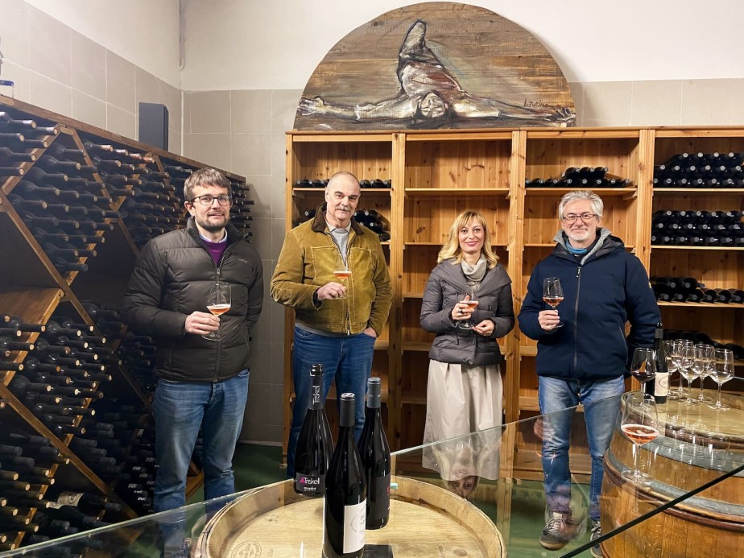
conferiscono uve da Arvier e Avise
terrazzati, lavorati quasi tutto a mano
nei tratti più ripidi dell'anfiteatro
all'anno. Un prodotto di nicchia, per scelta
certificato: vigna, cantina, testa
di viticoltura eroica esposta a sud
I vitigni autoctoni:
Petit Rouge — 85% Fumin Mayolet Pinot NoirPer ristoranti, enoteche e distributori
Nella nuova area B2B ogni cliente professionale entra con le proprie credenziali e trova listini dedicati, ordini rapidi a cartoni, schede tecniche e storico. Senza telefonate, senza fogli Excel.
Ambiente demo: si entra con qualsiasi email e password.
Ciao, Enoteca Alpina 👋Listino Horeca
Conto terzi & marketplace
In cantina vinifichiamo anche conto terzi per altri produttori dell'anfiteatro. Il nuovo sito nasce già multi-produttore: quando deciderete di vendere i loro vini, basterà accendere un interruttore. Niente rifacimenti, nessun trasloco.
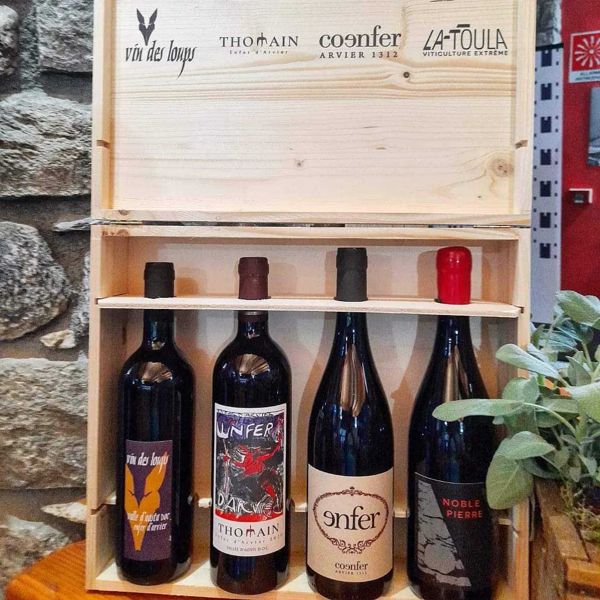
Fase 2 · 2026
Accessi reali, listini collegati al gestionale, ordini via email o API.
Fase 3 · 2027
Catalogo multi-cantina: ogni produttore con la sua pagina, il suo listino, il suo racconto.
Partner
Spazio riservato al prossimo produttore dell'anfiteatro.

Video ufficiale CoEnfer · YouTube
Dove siamo
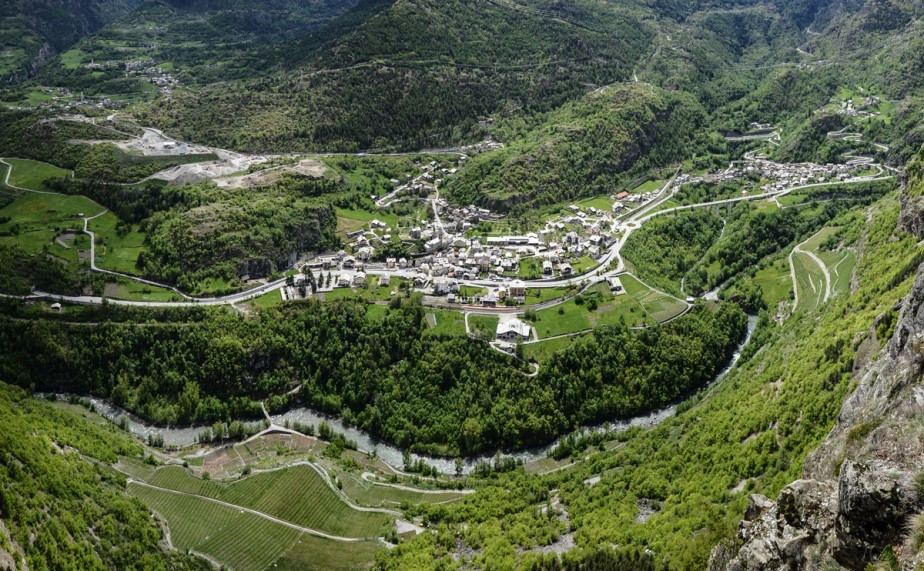
CoEnfer Coopérative de l'Enfer
Via Corrado Gex, 52
11011 Arvier · Valle d'Aosta
| Lun | 15:00–18:00 |
| Gio | 10:00–13:00 · 15:00–18:00 |
| Sab | 10:00–13:00 · 14:00–18:00 |
| Altri giorni | su appuntamento |